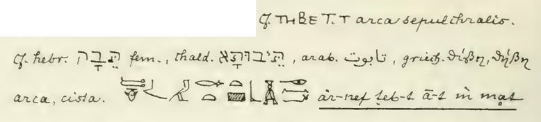

The Hebrew word for Ark is tebah.
What does tebah mean?
Can't say for sure. Maybe a rescue vessel.
"some protective quality of divine origin."48
Cohen, C. "Hebrew tbh: Proposed Etymologies." JANES 4 (1972): 51.
Tebah (תֵּבָה) occurs 26 times for Noah's vessel (Genesis 6–9) and twice for Moses' basket (Exodus 2:3, 2:5). It is never used for any other object in any Hebrew text — just the ark and the basket. This paper examines the Egyptian loanword claim specifically.
1. Brugsch (1867)
The Egyptian loanword argument — that tebah derives from Egyptian ḏb3.t (chest, coffin) — is a key support for the box ark tradition. This idea is attributed to Brugsch (1867) who "apparently"28 (according to Cohen) proposed that tebah derives from Egyptian ḏb3.t — chest, coffer, sarcophagus. However, direct examination1 of Brugsch's Wörterbuch (Vol. 4, dict. p.1628) shows:
Brugsch's own front matter settles the question of intent. His abbreviations list (Vol. 1, p.XII) defines cf. as confer — compare — nothing more.† His preface explicitly distinguishes Lehnwörter (loanwords) from stammverwandte Wurzeln (cognate roots), noting he separates them carefully. His Hebrew comparisons throughout the Wörterbuch are part of a broader argument that Egyptian is rooted in Semitic — a kinship observation, not a borrowing claim. Had Brugsch considered tebah an Egyptian loanword, he had the methodology and the vocabulary to say so. He didn't. He wrote cf.
First mention (line 4, p.1628) — in the funerary chest entry:
Brugsch cross-references Hebrew תָּבָה directly to the Egyptian teb in the sense of chest/sarcophagus (arca sepulchralis), alongside Chaldean, Arabic تابوت, and Greek θίβη/θήβη — treating it as one of several Semitic and Greek cognates of the funerary container root.

Figure: Brugsch entry page 1628
Those 3 lines read as follows:
Compare Coptic THBE [Sahidic dialect], T [Bohairic dialect]. Funerary chest/ark. (All dialect variants of one word — Crum p.397a)
Compare Hebrew תָּבָה feminine, Chaldean תַּבּוּתָא, Arabic تابوت, Greek θίβη, θήβη
chest, box. [hieroglyphs] "he had made a great teb-t [chest/sarcophagus] in granite"
Second mention (mid-page, p.1628) — in the box/cage/enclosure cluster:
A separate standalone note — "S. auch hebr. תָּבָה arca, cista" ("See also Hebrew תָּבָה, chest, basket") — placed within the broader containment cluster (der Kasten, die Kiste, der Käfig) and immediately before the pa-tebāu mas ("birth-box, cradle") entry, suggesting Brugsch saw the Hebrew word as belonging to the general enclosure root, not exclusively to the funerary meaning.
These two mentions appear within 12 pages (p1624-p1635) with 13 distinct word forms based on TB. By far the most polysemous is teb itself — 12 meanings on its own. Brugsch took the coffin/sarcophagus meaning but ignored nominal meanings like pomegranate trees, spears, surroundings and military flanks - not including the verbal meanings like exchange, reward, seal/shut, clothe/wrap, furnish/equip, pierce/stab since tebah is clearly a noun in Genesis. Brugsch knows teb sounds like the mysterious word tebah, then attempts a specific meaning from a word that doesn't have a specific meaning. He takes the coffin/sarcophagus meaning from the Egyptian glyph entry itself — with Coptic THBE confirming it — then follows the phonological chain Egyptian teb → Coptic THBE → Hebrew תָּבָה, using that chain to propose the loanword connection — "apparently". He doesn't actually say tyhe Hebrew is a loanword, he just compares the words.
Note: Modern Hebrew pronounces תֵּבָה as Tay-vah — the ב having shifted from B to V post-biblically. In Biblical Hebrew the ב was still a hard B, giving Teh-bah, which matches the phonetics of Brugsch's Egyptian teb — along with the H in tebah for a feminine ending. So Brugsch is using Biblical Hebrew, as expected.
Brugsch's equation was never purely Egyptological. The phonology follows the chain Egyptian teb → Coptic THBE → Hebrew תָּבָה — but the semantics come from the LXX. The LXX translators used two different Greek words for the two tebah uses: κιβωτός (kibotos — chest) for Noah's ark, and θίβις (thibis — papyrus basket) for Moses' basket — recognising that the two objects were different things. Brugsch collapses that distinction, noting both arca and cista against Hebrew תָּבָה on p.1628, steeped in biblical languages and working within the 19th century enthusiasm for Egyptian origins. He chose the coffin/chest meaning from a root with a dozen others — then reached for Jerome's arca as his Latin gloss. That's not Egyptian-to-Hebrew, that's LXX to Hebrew. If the flood account is taken as history, the directionality runs the other way — tebah is the original word, used by Noah, recorded by Moses. He had plenty of Egyptian words with a similar sound, but Moses chose the one rare word that fits the two rescue vessels.
Brugsch did not propose that tebah is an Egyptian loanword. His Wörterbuch entry is a comparative lexical observation — he identifies a cluster of words that look and sound related and carry the appropriate container meaning. The procedure runs like this: the LXX translates Hebrew tebah with Greek words meaning chest or basket; Arabic, Aramaic and other Semitic languages provide apparently similar forms; Brugsch finds an Egyptian t′b3.t (his notation for what Gardiner later writes ḏb3.t) whose meaning he understands as chest/coffin; he puts all these forms together as a comparative lexical entry under the Egyptian word, using cf. — which his own abbreviations list (Vol. 1, p.XII)† defines simply as confer, compare. His front matter explicitly distinguishes Lehnwörter (loanwords) from stammverwandte Wurzeln (cognate roots) — had he intended a loanword claim, his own methodology required him to say so. He didn't.
The circularity of the procedure is now visible. Brugsch used the LXX to establish what tebah means — chest/container — then searched Egyptian vocabulary for a similarly sounding word carrying that same LXX-derived meaning, and presented the two together. That establishes an interesting formal and semantic parallel. It does not establish etymology. It does not establish direction of borrowing. It does not establish that any borrowing occurred at all.
That Brugsch was working from LXX meanings rather than independent Egyptological analysis is proved by his own page. He covers both LXX renderings of tebah — θῖβις/θήβη (Exodus, Moses' basket) and κιβωτός (Genesis, Noah's ark) — and matches each to Egyptian vocabulary.27 He is not starting from the Egyptian and working outward. He is starting from the Greek translations and working backward into Egyptian.
What appeared to be two different Coptic entries — THBE and TAIBE/TAIBL — are confirmed by Crum's Coptic Dictionary (1939, p.397a) to be dialect variants of a single word, covering chest, coffin, clothes box, grain container, and pouch. There was never a convenient split into Noah and Moses meanings. There was one Egyptian root, one Coptic word, and one Hebrew word. The only place the Noah/Moses distinction exists is in the LXX — and that is precisely where Brugsch found it. He used the LXX split to organise two spellings of the same Coptic word into two entries, matched each to a different Greek rendering of tebah, and noted the resemblance. The meaning came entirely from Greek. The sound came from Coptic. The Hebrew word was the thing being explained — it contributed nothing to its own explanation.
2. Erman (1892)
Erman (1892)2 had accepted the parallel and published it.
3. BDB (1906)
BDB (1906)3 then converted this comparative observation into an etymological claim — "prob. Egypt. loan-word from t-b-t, chest, coffin (Brugsch, Erman)" — attributing to Brugsch a loanword argument he never made.
4. Erman & Grapow (1926)
By 1926 Erman silently dropped it from the authoritative Wörterbuch der Ägyptischen Sprache, leaving BDB's attribution floating without its Egyptological anchor. The qualifier "probably" was then dropped by every subsequent tradition that copied BDB. HALOT has since retreated to "open."24
What Brugsch actually demonstrated:
Hebrew tebah ↕ Greek words used to translate it ↕ other Semitic container words ↕ Egyptian words with similar phonetic form and container meaning.
What later scholarship turned this into:
Egyptian ḏb3.t → Hebrew tebah, therefore tebah is an Egyptian loanword.
That second proposition requires an etymological argument about direction of borrowing and historical phonology that Brugsch's dictionary entry does not supply — and never claimed to. The loanword hypothesis is not Brugsch's finding. It is a subsequent interpretive development, built on a comparative observation, hardened by repetition, and cited ever since as if it were established fact.
As Cohen further explains,8
5. Lambdin (1953)
tebah was conspicuously absent from Lambdin's systematic Egyptian loanword catalogue in 1953. Lambdin went through the entire Hebrew Bible and identified only 40–50 Egyptian loanwords — all concrete, specific, culturally Egyptian concepts: gome (papyrus reed), ye'or (Nile/river), Paroh (Pharaoh), and units of measure like eifah, hin, zeret. A mysterious word like tebah with no clear Hebrew etymology appearing only twice in the Bible was an obvious candidate for Egyptian origin. Lambdin was not convinced.6. Cohen (1972) and HALOT
Cohen's 1972 paper systematically challenges each Egyptian word association and has not been rebutted since.† Corresponding with Cohen in 2004, he reiterated that his paper "has been cited many times" and that "he still stood by what he said back then."910 Cited yes — but not rebutted.BDB's own qualifier "probably" was eventually dropped by every tradition that copied it. HALOT has since lowered the verdict to "open."24
7. The tradition that copied without checking
Wenham (1987) asserts Egyptian etymology without citing Cohen.20 Hoffmeier (1997) asserts it without engaging Cohen.21 Spoelstra (2020) accurately quotes Cohen's demolition and confirms his functional conclusion — "terminus technicus for a life-preserving receptacle" — then instead of stopping there, blends Cohen's "protective quality of divine origin" into a "contra coffin" and extends into a framework of ziggurats, covenant theology and cosmic symbolism. For this mystical contra-coffin (Götterschrein) link he uses Yahuda — already addressed by the same Cohen who led him to "life-preserver," and by Spiegelberg, whom Cohen cited, a dependence Cohen's own paper had already addressed.This etymology never tackles why the author of Genesis would borrow a foreign word at all.
Why borrow at all?
Hebrew already had a word that covered the chest-to-coffin range perfectly — aron (אָרוֹן), used 202 times in the Hebrew Bible for storage chest, the Ark of the Covenant, and the only coffin in the entire Hebrew Bible (Joseph's, Genesis 50:26). If Moses wanted to borrow an Egyptian word meaning chest or coffin, aron already did that job. There was no lexical gap to fill. Tebah was not used to fill a gap. It was used because it meant something aron didn't — a vessel that keeps you alive when everything outside is trying to kill you. Moses had aron for chests and coffins. He reached for tebah for something else entirely. The Egyptian loanword argument not only fails to explain what tebah means — it fails to explain why Moses would have needed it at all.Cohen's "protective quality of divine origin" is appropriate for Noah's Ark that was instructed by God. The baby basket does not record anything more than a desperate mother and some reeds. So Cohen's phrase is strained for the tebah basket. Keep in mind that all these writers treat Noah's Ark as fiction. Cohen, honest as he is about the textual limitations, calls Moses' baby basket a "literary allusion" to Noah's ark.
No Egyptian word explains tebah. Cohen said so.
Background
What makes a loanword?
When a word is declared a loanword, it should match both the phonological (sound) and semantic (meaning) of the donor word, as well as a plausible historical connection. For example, the Egyptian word for "reeds": Moses was educated in Egypt (Acts 7:22), the words sound the same - in Egypt, qm3 or km3 in Hebrew גֹּמֶא (gome). This is the word used for Moses' basket in Exodus 2:3 — "she took for him an ark of gome" — תֵּבַת גֹּמֶא. In consonant shorthand Egyptian GM→ Hebrew GM. It is a recognised loan word because it is the same sound, the same meaning, and Moses knew both.
The Cambridge Handbook of Phonology defines a loanword as "a word introduced to one language... from another language... whose phonological shape (or an approximation thereof) is introduced into [the borrowing language] along with its meaning."25 Haugen's foundational study of linguistic borrowing established explicit criteria for identifying loanwords, requiring both formal and semantic correspondence.26 Campbell's standard textbook on historical linguistics frames the question as: "What are the methods for determining that something is a loanword?" — and answers with phonological correspondences, semantic considerations, historical contact, and distribution among related languages.27 It is not enough to be only phonetically similar, or only semantically similar. Both are essential just to put a word on the table as a possible loanword. Additional factors might bolster the case to a "probable".
Not so for the tebah candidates. Even the phonology of matching the letters תֵּבָה to ḏb3.t (T-B-H against D-B-T) is dubious. Brugsch himself — the man credited with proposing the equation — explicitly rejected a cognate proposal at Vol. 2, p.628 of his own Wörterbuch because the two words sound differently ("dem ganz anderen lautenden Worte"). The ḏb3.t → tebah equation fails by his own stated standard. Under the post-1927 Gardiner standard, ḏb3.t matched against tebah gives: ḏ≠T (mismatch), B≈B (match), H≠T (mismatch) — two out of three fail. Under Brugsch's own system, where his T covers the same consonant Gardiner writes as ḏ, the match improves to T≈T, B≈B — but H≠T remains. The feminine ending H in tebah is not a root consonant, which Brugsch himself would have known — leaving a clean two-consonant match in his own notation. It is the tradition's adoption of Gardiner's ḏ that introduced the apparent D≠T mismatch. Not a valid cognate by any phonological standard regardless — but the mismatch is in the tradition's rendering, not Brugsch's. Not that you need to be a philologist to find it unconvincing that two words are "probably" the same if they share the same middle sound.
The ancient translators all recognised the two tebah uses were different objects — and said so:
| Language | Noah's ark | Moses' basket | |
|---|---|---|---|
| Hebrew (Moses) | Hebrew | תָּבָה | תָּבָה |
| LXX | Greek | κιβωτός (kibotos — chest) | θίβις (thibis — papyrus basket) |
| Jerome (Vulgate) | Latin | arca (chest/box) | fiscella (little basket of rushes) |
| Brugsch | Egyptian | teb (arca - box) | teb (cista - basket) |
| English tradition | English | ark | basket |
Moses used a word for objects that act the same, but look completely different. The translators wanted a descriptive appearance and ended up dividing into two different words. The LXX found box and basket and Jerome followed. Brugsch found one Egyptian word covering both, but the tradition that followed took only arca and dropped cista entirely — losing the basket connection in the process.
The following table compares the three Egyptian words proposed as the source of Hebrew tebah. The recognised loan word for "reeds" is included for comparison. Applying the primary loanword criteria to each:
| Criterion | ḏb3.t shrine/sarcophagus (tradition) |
tb.t chest/box (Brugsch/Westermann) |
dp.t ship (Yahuda) |
qm3 → gome reeds (control — same verse) |
|---|---|---|---|---|
| 1. Phonology — consonants correspond by known rules | ❌ Ḏ→T wrong; 3→H no rule; B=B only | ✅ T→T, B→B; H absent in tb.t | ❌ D→T wrong; P→B marginal; T→H no rule | ✅ G/K→G, M→M; clean consonantal match |
| 2. Semantics — meaning transfers coherently | ❌ Cohen: land-based only | ❌ Cohen: land-based only | 0.5 Ship but not basket | ✅ Reed/papyrus plant — identical in both languages |
| 3. Historical contact — Egypt/Israel contact documented | ✅ Moses in Egypt | ✅ Moses in Egypt | ✅ Moses in Egypt | ✅ Moses in Egypt; Ex 2:3 |
| 4. No native equivalent — Hebrew lacked the concept | ❌ aron (אָרוֹן) covers chest/coffin — 202 occurrences | ❌ aron (אָרוֹן) covers chest/box — 202 occurrences | ❌ Multiple Hebrew words for ship exist | ✅ No prior Hebrew word for papyrus reed |
| 5. Coptic reflex — confirms phonological chain | ✅ THBE/TAIBE — same word, dialect variants (Crum p.397a) | ✅ THBE matches tebah | ❌ No relevant Coptic reflex | ✅️ Coptic GOME attested |
| 6. Included in loan word catalogue — Lambdin (1953) | ❌ Not listed | ❌ Not listed | ❌ Not listed | ✅ Listed by Lambdin (1953) |
| Score Essential (1 to 2) | 0% | 50% | 25% | 100% |
| Score Additional (3 to 6) | 25% | 50% | 25% | 100% |
| Essential x additional % | 0% | 25% | 6% | 100% |
tb.t scores highest — it is Brugsch's actual word, its phonology works, and the Coptic confirms it. It still fails the Egyptological test (Cohen: only ever used for land-based funerary objects) and the basket fails the semantic test too. The tradition's word ḏb3.t and Yahuda's rescue word dp.t score equally poorly. No Egyptian candidate clears the minimum loanword threshold. Etymology undetermined.
Looking beyond textual criticism, there are archeological problems with the box meaning of tebah. Ancient Egyptian baskets are almost always round or oval, especially reed baskets that suit coil-formed construction. Ancient ocean-going ships are even harder to find in box form. Rounded yes, box no.
Logically, "coffin" does not make sense. Moses had a privileged Egyptian education and knew all their words, and picked "coffin". Why would he say his mother put him in a coffin to die in front of his sister? And how is "coffin" a suitable word for a colossal vessel full of animals and provisions, built for the express purpose of keeping the occupants alive, important enough to keep God waiting (1 Peter 3:20)? The Egyptian loanword "apparently" proposed in 1867 finds no support from etymology, phonology, Egyptology, semantics, or simple logic.
The Translation Tradition
The LXX (c.250 BC) rendered tebah as kibotos — chest or box — for Noah's vessel.12 Jerome (c.400 AD) translated it as arca.13 Wycliffe (1382) coined "ark" from arca.14 Tyndale (1530) went back to the Hebrew, saw tebah, and still wrote "ark" — the English word was already fixed.15 The English word "ark" has no Hebrew ancestry. It is Greek → Latin → English only.
The LXX does not consistently translate tebah as kibotos. For Moses' basket it used thibis — defined by Liddell-Scott as "a small basket made out of strips of papyrus."16 The same Hebrew word, two different Greek translations. The Alexandrian translators themselves recognised that Noah's vessel and Moses' basket could not share one geometric word — an implicit acknowledgement that tebah carries no consistent geometric meaning. Kibotos is also used for the Ark of the Covenant — nobody argues it is box-shaped on the basis of the word. The translation tradition confirms the box reading only if its internal inconsistency is ignored.
The Babylonian Parallel
The Babylonian flood vessel (Gilgamesh XI) is described as cubic. Cassuto cited Haupt (1927) to suggest Genesis and Gilgamesh share a common cubic conception. Westermann (1974) addressed this directly: "the descriptions and the designations each have their own history."17 HALOT (1999) cites this passage and concludes the flood vessel "was either a huge ship, or simply a ship."18 The Atrahasis flood vessel is eleppam rabîtam — a large ship. The Sumerian flood vessel is a huge ship. The Babylonian cubic dimensions are numerologically motivated — the sacred iku unit — not hydrodynamically derived. The parallel undermines the box reading rather than supporting it.
Scholarly Consensus says box
Morris (1971) asserted "the Hebrew word itself implies this" box shape — no citation, no philological source. Cohen published one year later.19Scholarly consensus in this case is transmission by copying. BDB embedded "probable" in 1906; the tradition copied the conclusion and dropped the qualifier. A related assertion, occasionally stated but rarely developed, is that tebah's restricted occurrence — only Genesis 6–9 and Exodus 2, nowhere else in the Hebrew Bible — implies a technically defined object with a specific fixed form. The weakness is that it proves too much: the same uniqueness equally supports Cohen's reading, that tebah denotes only one thing — a life-preserving vessel. Uniqueness of usage is neutral between the two readings.
END OF BOX CLAIMS....
The Process of Elimination
Tebah fails every proposed geometric meaning on two independent tests: does the meaning work for both occurrences, and did Hebrew already have a better word?
| Proposed meaning | Fails because | Hebrew word that Moses used for other things? |
|---|---|---|
| Ship | Moses' basket is too small to be a ship — so the word has no scale | oniyah — 31× |
| Box/cuboid | Moses Papyrus reeds almost certainly oval and circular forms particularly common in ancient Egyptian basketry | aron — 202× |
| Coffin | Both tebah's have living occupants, active missions, provisions, contingency plans. The ark is oversized for a coffin box. | aron — 202× Gen 50:26 |
| Chest | Noah's ark too big for a chest/box. | aron — 202× Exodus 25 |
| Container | Too generic — both vessels are specifically purposeful | keli — 320+× |
Moses had the right word for every proposed meaning and chose not to use it — twice, deliberately, for two objects that share only one property: both preserve life.
What Tebah Does Mean
The Targum Onkelos renders tebah as Aramaic תֵּיבוּ — not a translation but the same word in the sister dialect, same root ת-ב, same consonants, different morphological ending.23 The Aramaic speakers imposed no geometry because they needed no interpretation. They already had the word. The box required Greek librarians in Alexandria to invent it and German philologists in the 1860s to explain it.
HALOT (1999) replacement for BDB — concludes: "decision open"; "the vessel used by the hero of the deluge was either a huge ship, or simply a ship."24 Two independent lines — Cohen's Hebrew philology and Westermann's ANE cuneiform scholarship — reach the same conclusion without citing each other. Tevah does not tell us the shape, but the ark and the basket have the same purpose.
After concluding that none of these ideas are workable, Cohen proposes a different tack - a semantic one. The word might be do do with the function of the ark and the basket - suggesting a lifeboat or some sort of rescue vessel.
The Engineering Consequence
The Ark Encounter hull incorporates some construction simplifications — larger bilge radius for laminated beams, adjusted keel locations, and thicker skeg extension. Cb = 0.87 is measured directly from the geometry sent to Troyer Architects on 18 April 2011, which was used as the hull form definition of the Ark Encounter.
With Cb = 0.87 the Ark lies at the upper end of full-bodied ship forms — near the upper limit of a Great Lakes bulk carrier, and not too far from ocean-going barges with a Cb of 0.92 and above. Naval architect Jim King (Creation Museum, 2005) proposed Great Lakes bulk carriers as the nearest modern analogue — independently confirmed by the CAD calculation. For scale: at 157m × 26m, the Ark falls just under the Panamax class limit — small enough to transit the Panama Canal, yet larger than any timber vessel ever built. Neither "just a barge" nor "a conventional ship" — a purpose-built vessel in the transitional region between the two, with enough hull form to weathervane effectively in the מַבּוּל but not streamlined for travel speed at the expense of cargo capacity.
The Ark Encounter hull at Cb = 0.87 sits below Hong's barge-type hulls, which had rectangular cross-sections modified for bilge radius and dead rise — no block coefficient is stated in the paper, but Cb in the range 0.91–0.94, depending on dead rise angle and bilge radius. The Ark Encounter hull was not in Hong's comparison set. At 157 metres, the length follows the Lovett cubit paper and the shape is the physical result of taking Cohen seriously. The word carries no shape. The dimensions specify an envelope. Naval architecture fills the envelope with the hull form that best handles the flood voyage.
Conclusion
The Egyptian etymology fails on four independent grounds. Cassuto's geometric assertion is unreferenced, its modern Hebrew evidence is circular, and its two engineering arguments are demonstrably wrong. The translation tradition is internally inconsistent. The Babylonian parallel has its own independent history from Genesis. The biblical text specifies a container, not a hull. The creationist literature inherited the box without checking the Hebrew. Scholarly consensus is transmission by copying.
Tebah fails every proposed geometric meaning for Moses' basket, and Hebrew had a better word for every proposed meaning that Moses demonstrably knew and chose not to use.
What remains: a functional descriptor with no geometric content. A vessel word defined entirely by purpose. The etymology is undetermined. The shape is not in the word.
Tebah probably means rescue vessel, which is about the only thing that works for both the ark and the basket.
T. Lovett, 2026
References
Numbered in order of first citation in the text.
↩1. Searching by Egyptian letter order showed no ḏb3.t → tebah entry — probably due to different transliteration protocols used by Brugsch (well before the Gardiner standard of 1927). Searches by "arca" and Hebrew תָּבָה were more OCR-scannable than Brugsch's cursive handwriting across 1418 pages of polyglot text. AI visual reading of rasterized pages resolved what OCR could not. Full methodology documented in papers-tbh-dbt.
Hieroglyphisch-Demotisches Wörterbuch. 7 vols. Leipzig: J.C. Hinrichs, 1867–1882.First proposed the equation tebah = Egyptian ḏbꜣ.t. Reasonable for 1867 before rigorous comparative phonological rules had been established.
↩2. Erman, A. "Das Verhältnis des Ägyptischen zu den Semitischen Sprachen." ZDMG 46 (1892): 123.
Accepted Brugsch's equation in print. Silently withdrew it 34 years later — see ref 7.
↩3. Brown, F., Driver, S.R., and Briggs, C.A. A Hebrew and English Lexicon of the Old Testament. Oxford: Clarendon Press, 1906. p.1061.
"prob. Egypt. loan-word from t-b-t, chest, coffin (Brugsch, ErmanZMG xlvi 123)." BDB's qualifier "prob." was dropped by every tradition that copied it.
↩4. Cohen, C. "Hebrew tbh: Proposed Etymologies." JANES 4 (1972): 37–51, fn.14. Full text →
"תבה was apparently first equated with Egyptian db't by H. Brugsch... This equation was accepted by A. Erman... It has been accepted by biblical scholars ever since. Note, however, that this equation is conspicuously absent from A. Erman and H. Grapow, Wörterbuch der Ägyptischen Sprache... and T. O. Lambdin, 'Egyptian Loan Words in the Old Testament'... though not specifically denied by these authors."
↩†. Cohen, C. "Hebrew tbh: Proposed Etymologies." JANES 4 (1972): 51. Full text →
Cohen's summation: "In summation, we have shown that none of the solutions heretofore presented satisfactorily explain why the term תבה was used in both the biblical flood story and the story of Moses' birth. Two would-be solutions revolve, in one way or another, around the Egyptian db't, which never has anything to do with boats, and therefore cannot be compared... One partial answer to the problem, which is not without difficulty, but which may nevertheless be leading in the right direction, involves the similarity in description and preparation of the respective vessels in the Akkadian flood story and the story of Sargon's birth. The author of the story of Moses' birth might likewise have called the receptacle into which Moses was placed by the same name that was given to the biblical ark in the Hebrew flood story, because of some protective quality of divine origin which the latter possessed... This literary allusion is certainly not the entire answer to the problem (which surely cannot be completely solved until the meaning of תבה is established on a sound philological basis), but it is hopefully a step in the right direction."
↩5. Cohen, fn.14 cont. "Never are either of these words used in Egyptian texts for boats." The proposed donor words db't and tbt denote land-based funerary objects only.
↩6. Cohen, p.38 and fn.14. Consonantal correspondence: in post-1927 Gardiner notation, Egyptian ḏb3.t (ḏ-B-T) vs Hebrew תֵּבָה (T-B-H) — one certain match (B), one arguable (T/ḏ shifted between systems), one mismatch (H and T). In Brugsch's own pre-Gardiner system, which has no D consonant, the initial consonant he writes as T covers what Gardiner later writes as ḏ — so Brugsch's rendering teb matches Hebrew T-B cleanly on two consonants. The H in tebah is the feminine ending, not a root consonant. Spiegelberg's reaction to Yahuda: "ihm [ist] das Missgeschick zugestossen, dass er... db't... 'Kasten'... und das Wort dp.t 'Schiff', die gar nichts miteinander zu tun haben, zusammen wirft." (He had the misfortune of confusing db't 'chest' with dp.t 'ship', which have nothing to do with each other.)
↩7. Erman, A. and Grapow, H. Wörterbuch der Ägyptischen Sprache. 5 vols. Leipzig: J.C. Hinrichs, 1926–1931. Vol. V, pp.261, 561.
Authoritative Egyptian dictionary. The tebah/ḏbꜣ.t equation is conspicuously absent — Erman's silent retraction of his 1892 acceptance (ref 2).
↩8. Lambdin, T.O. "Egyptian Loanwords in the Old Testament." JAOS 73 (1953): 145–155.
Specialist Egyptian loanword catalogue. Tebah does not appear.
↩9. Cohen, C. Personal communication to T. Lovett, 2004.
Cohen confirmed he still stood by the conclusions of his 1972 paper and that it had been cited many times without rebuttal.
↩10. Cohen, p.51 (conclusion).
"none of the solutions heretofore presented satisfactorily explain why the term תבה was used in both the biblical flood story and the story of Moses' birth... This literary allusion is certainly not the entire answer to the problem (which surely cannot be completely solved until the meaning of תבה is established on a sound philological basis)."
↩11. Cohen, p.38, fn.10–11.
"neither the biblical text nor comparative Semitic philology bear out Cassuto's contentions. As for his first objection (Gen. 7:18), the verb הלך is used elsewhere for ships not only in biblical Hebrew, but in Akkadian as well." Biblical: Is. 33:21; Ps. 104:26; 2 Chron. 9:21; 20:36–37. Akkadian example (fn.11): "If his ship arrives here from Cyprus" (PRU III, RS 16.238:10–11).
↩12. Septuagint (LXX). Genesis 6–9; Exodus 2:3,5. Alexandria, c.250 BC.
Renders tebah as kibotos (κιβωτός) for Noah's vessel; as thibis (θῖβις) for Moses' basket. The inconsistency is the key evidence against a geometric reading.
↩13. Jerome. Biblia Sacra Vulgata. c.383–405 AD.
Renders Noah's tebah as arca (chest/box); Moses' as fiscella scirpea (rush basket). Jerome preserved the LXX's distinction — two different words for the same Hebrew word.
↩14. Wycliffe, J. Wycliffe Bible. 1382.
First English Bible. Translated from the Vulgate, not from Hebrew. Coined "ark" from Latin arca. The English word has no Hebrew ancestry.
↩15. Tyndale, W. Tyndale Bible. 1530.
First English translation directly from Hebrew. Tyndale saw tebah and still wrote "ark" — the English word was already fixed after 148 years of Wycliffe usage.
↩16. Liddell, H.G., Scott, R., and Jones, H.S. A Greek-English Lexicon. 9th ed. Oxford: Clarendon Press, 1940. p.801b.
"thibis (θῖβις): a small basket made out of strips of papyrus." The LXX's word for Moses' basket — confirming it cannot be rectangular.
↩17. Westermann, C. Genesis 1–11: A Commentary. BK 1/1. Neukirchen-Vluyn: Neukirchener Verlag, 1974. pp.564–566. English trans. Minneapolis: Augsburg, 1984.
"in Gilgamesh 11 it is to be noted that a gigantic cubic chest is understood to be a ship, while in Gn 6 the ark, which had already been likened to a ship, is described as a box; this shows that the descriptions and the designations each have their own history."
↩18. Koehler, L., Baumgartner, W., and Stamm, J.J. The Hebrew and Aramaic Lexicon of the Old Testament (HALOT). Leiden: Brill, 1999. Vol. IV, tebah entry.
"Schmidt loc. cit. 69 leaves the decision open." "In ancient near-eastern traditional literature the vessel used by the hero of the deluge was either a huge ship, or simply a ship." Gold standard modern Hebrew lexicon — replacement for BDB.
↩19. Cohen, p.37 (opening).
"The term תבה occurs in the Hebrew Bible in but two episodes, the story of the flood, and the story of Moses' birth. Its usages in these two cases are radically different. In the former, תבה denotes a colossal ark, while in the latter, the meaning is a receptacle of infant size."
↩20. Wenham, G.J. Word Biblical Commentary: Genesis 1–15. Waco: Word Books, 1987. p.172.
Listed alongside BDB and Driver as asserting Egyptian etymology for tebah (Spoelstra, fn.7; fn.41). Does not cite Cohen (1972).
↩21. Hoffmeier, J.K. Israel in Egypt: The Evidence for the Authenticity of the Exodus Tradition. Oxford: Oxford University Press, 1997.
Asserts Egyptian etymology without engaging Cohen.
↩22. Spoelstra, J.J. Life Preservation in Genesis and Exodus: An Exegetical Study of the Tebā of Noah and Moses. Contributions to Biblical Exegesis and Theology 98. Leuven: Peeters, 2020. Originally PhD dissertation, Stellenbosch University, 2013.
Most recent peer-reviewed academic treatment of tebah. Accurately quotes Cohen's demolition of the Egyptian cognates (p.197): "never are either of these words used in Egyptian texts for boats." Then sidesteps it by accepting Yahuda's rescue — ḏb.t etymologically underlying ḏbȝ.t, making it "a legitimate cognate to convey a type of caïque" (p.198) — without engaging Spiegelberg (1929), who had demolished that same move. Concludes: "tebâ is a terminus technicus for a life-preserving receptacle" — Cohen's functional conclusion — while still maintaining Egyptian etymology. The central argument (Cohen) is quoted but not rebutted.
↩23. Targum Onkelos. Torah. Standardised in Babylonia, c.2nd century AD.
Renders tebah as Aramaic תֵּיבוּ — same root ת-ב, same consonants, different morphological ending only. Applied to Noah's vessel and Moses' basket. No geometric imposition.
↩24. HALOT, Vol. IV (see ref 26).
"the vessel used by the hero of the deluge was either a huge ship, or simply a ship." Citing Westermann (ref 25).
↩48. Cohen, C. Hebrew tbh: Proposed Etymologies. JANES 4 (1972): 51.
"In summation, we have shown that none of the solutions heretofore presented satisfactorily explain why the term תבה was used in both the biblical flood story and the story of Moses' birth... The author of the story of Moses' birth might likewise have called the receptacle into which Moses was placed by the same name that was given to the biblical ark in the Hebrew flood story, because of some protective quality of divine origin which the latter possessed... This literary allusion is certainly not the entire answer to the problem (which surely cannot be completely solved until the meaning of תבה is established on a sound philological basis), but it is hopefully a step in the right direction."
↩25. Goldsmith, J. (ed.). The Cambridge Handbook of Phonology. Cambridge: Cambridge University Press, 2011. Definition of loanword: "a word introduced to one language... from another language... whose phonological shape (or an approximation thereof) is introduced into [the borrowing language] along with its meaning." Both phonological form and meaning are transferred together in a genuine lexical loan.
↩26. Haugen, E. "The Analysis of Linguistic Borrowing." Language 26, no. 2 (1950): 210–231. Foundational paper establishing explicit terminology and methods for analyzing borrowing. Requires both formal (phonological) and semantic correspondence for a loanword to be identified.
↩27. Campbell, L. Historical Linguistics: An Introduction. 4th ed. Cambridge, MA: MIT Press, 2021. Standard university textbook on historical linguistics. Frames loanword identification as requiring phonological correspondences, semantic considerations, historical contact, and distribution among related languages. "What are the methods for determining that something is a loanword and for identifying the source languages from which words are borrowed?" — discussed in the chapter on borrowing.
↩28. Brugsch Wörterbuch — full T-B entry, Lovett (2026).
A systematic search of all seven volumes of Brugsch's Hieroglyphisch-Demotisches Wörterbuch (1867–1882) using OCR and AI image recognition — searching for arca, Hebrew script, and Egyptian alphabetical ordering — locates only one relevant entry linking Egyptian to Hebrew תָּבָה: teb (Vol. 4, p.1628) → Coptic THBE → Hebrew תָּבָה. No entry connects ḏb3.t to Hebrew tebah anywhere in Brugsch. Cohen's "apparently" was therefore warranted — he could not verify the attribution directly, and the full-text search confirms why.
High-resolution image processing of the complete T-B entry (pp. 1624–1635) reveals the root's extraordinary semantic range across twelve consecutive pages:
p.1624 — tebu: exchange, repay, recompense, retaliate (Coptic TCWB, TOB — retribuere, rependere, vicissim respondere)
p.1625 — teb: reward, retribution; close/shut/seal (Coptic EΘBE, ETBE — pro, propter, ob)
p.1626 — teb: blocked/stopped up (of the nose); tebes: enclose with a garment, clothe, wrap (Coptic ѲBICW — vestimentum, indumentum); teb: furnish, equip, outfit (Coptic EBBE — quod spectat ad; munir, fournir)
p.1627 — teb: pierce, stab, strike; tebteb: run through, slay (Coptic TBC — pungere); teb: spear, lance, harpoon; teb: chest/box (variants attested — Amasis Stele, Rhind papyrus, Qurna)
p.1628 — teb: chest, "Todtenkasten," sarcophagus (le cercueil, le sarcophage, la caisse funéraire); Coptic THBE — arca sepulchralis; cross-referenced to Hebrew תָּבָה, Chaldean, Arabic تابوت, Greek θίβη/θήβη; pa-tebāu mas = "der Geburtskasten, die Wiege" (birth-box, cradle); also wing/horn of an army
p.1629 — teb: northern/southern wing or flank of a city or army; tebu: horned cattle, all that bears horns; tebt: brick, tile, slab of metal or stone (Coptic TCWBE — la tuile)
p.1630 — teb: pomegranate tree; tebt: branch or bough of the sycamore (Zweig, Ast am Baume; branche, rameau); tebu: circle, circumference, surroundings, circular motion (der Kreis, die Umgebung; le cercle, la circonférence)
p.1631 — tebt: wheel/rim of a chariot (das Rad am Wagen); pomegranate wine; teben: go in circles, traverse, circumnavigate (circuler, se mouvoir en rond)
p.1632 — teben: child's sidelock of hair (die Haarlocke der Jugend; la tresse de cheveux); tebh: beseech, pray humbly, petition (Coptic TBG, TWBG — orare, rogare, petere, mendicare)
p.1633 — tebh: altar offering, sacrifice to gods or the deceased (ein dargebrachtes Opfer; sacrifice en l'honneur des dieux ou des défunts); sacred offerings; grain for offerings
p.1634 — teber: innermost sanctuary, Holy of Holies (das Innerste, das Allerheiligste; le lieu le plus caché et le plus saint d'un Temple); Coptic TABIP — adytum tabernaculi, interius cubiculum; Brugsch notes Hebrew דְּבִיר as cognate; tep: eat/consume/devour; tep: taste, flavour (Coptic TEП, TOП — gustare, sapor)
p.1635 — top/tep: ship's keel, the ship itself (der Schiffskiel, das Schiff; la quille d'un navire); Coptic TOП — carina navis; tepet: offering bread (Kostbrot); tept: hippopotamus ("the swallower")
The T-B root in Egyptian is not a specific word meaning "coffin" or "box." It is a root expressing a vast range of concepts — containment, enclosure, wrapping, sealing, equipping, exchange, striking, circularity, and sacred action — attested across twelve pages of the most comprehensive Egyptian lexicon of the 19th century. The chest/coffin meaning is one cluster among at least a dozen. Any argument that Hebrew tebah must derive from Egyptian T-B because of a shared "chest/box" meaning is obliged to explain which meaning cluster was borrowed and why — and why no other Egyptian loanword evidence supports the connection.